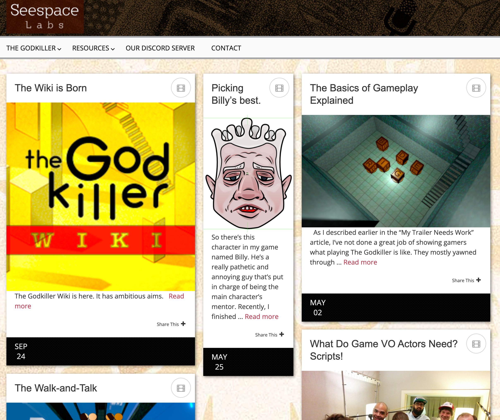
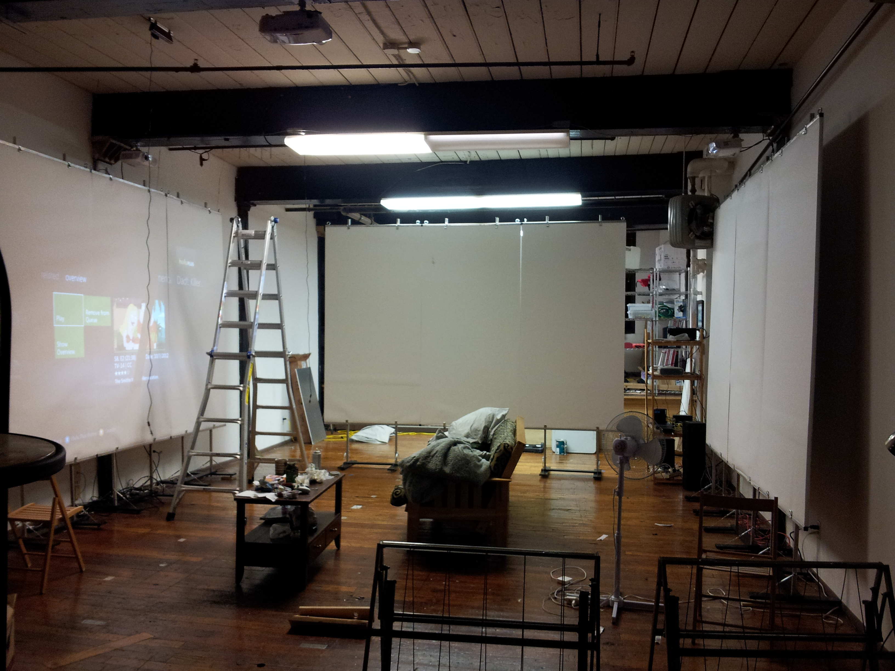
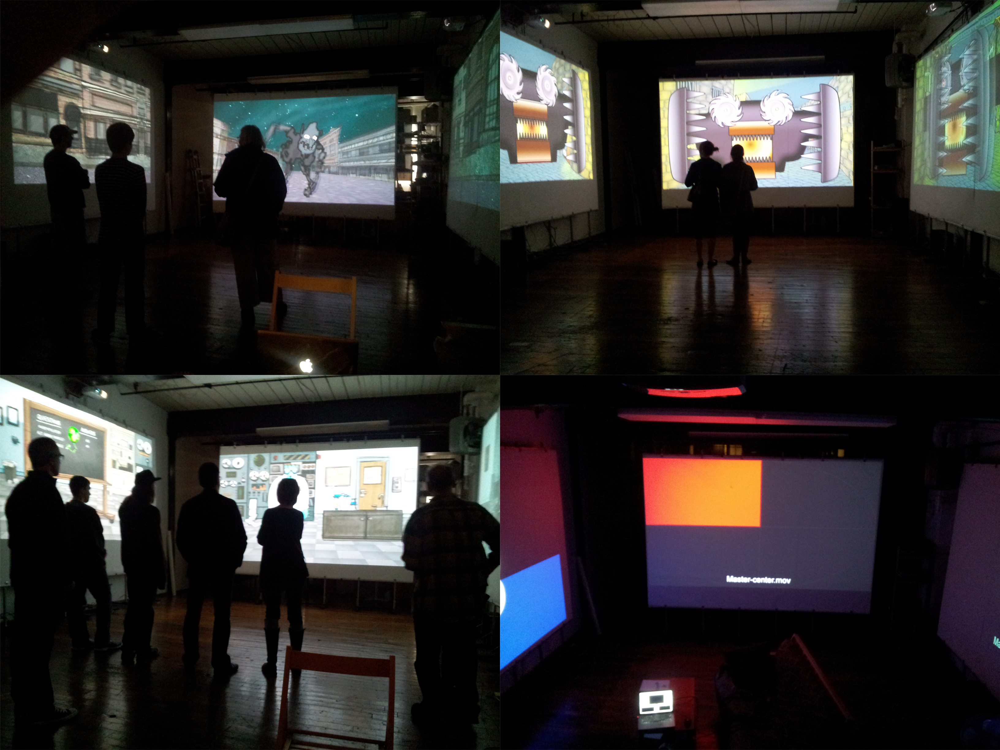
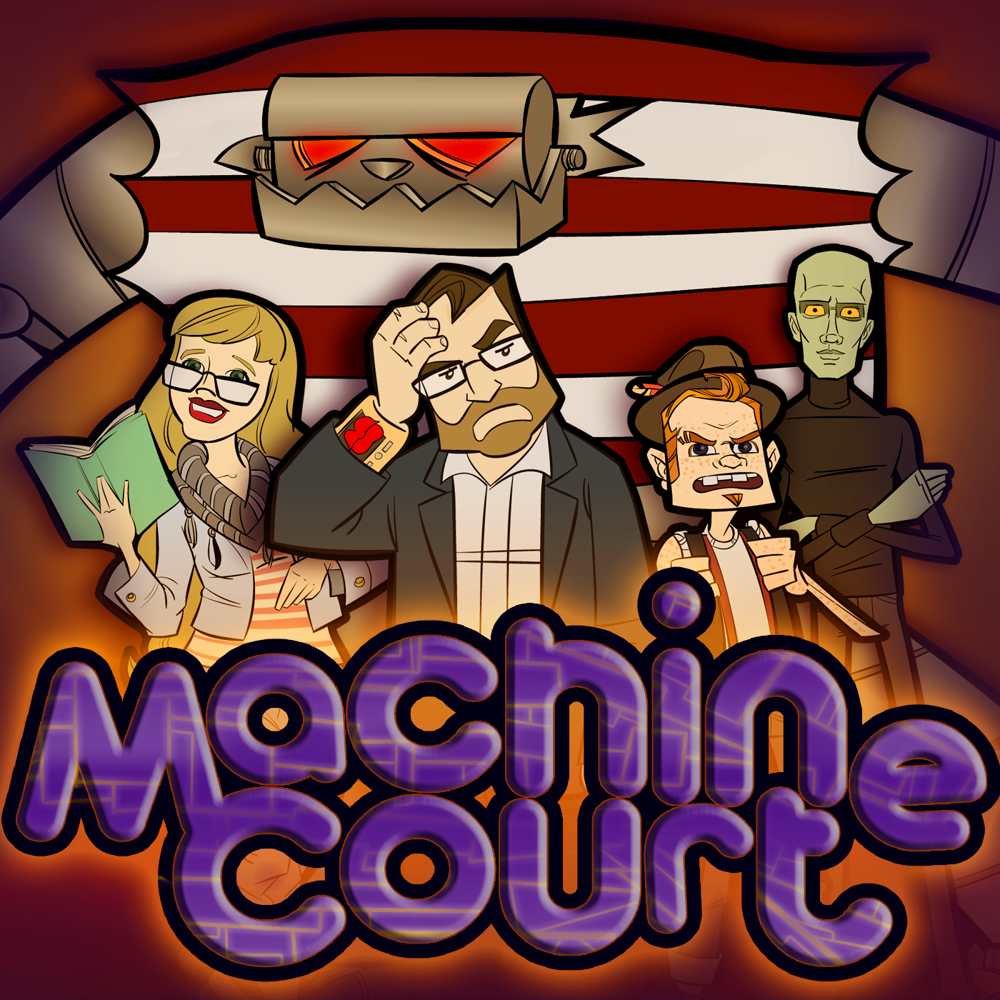
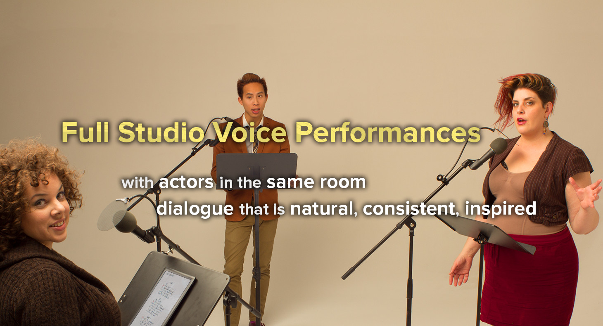
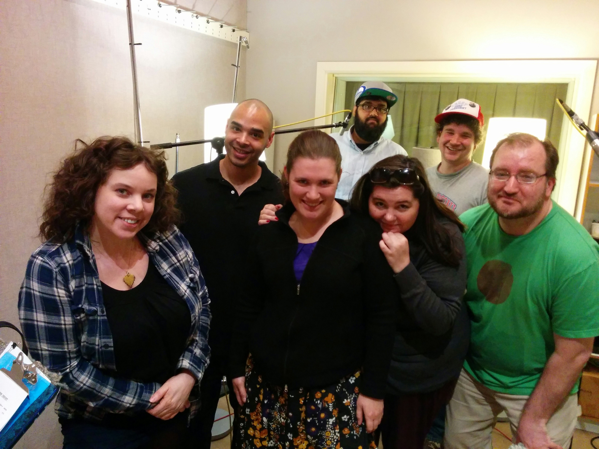

Seespace Labs
Hi! I've taken down the original seespacelabs.com website and made this page to chronicle a whole lot of creative work I'm still proud of.
Why take the site down? Well... uh... hmm.
The website was announcing everything in an "active" style. But looking closer, one can see these are events that happened years ago.

I don't want to erase the record of all the fun things myself and others have created. But I also don't want the sadness and implied obligations of an abandoned website. Oh, and it's like $200-something a year to host. So this simpler page serves to record some "Seespace Labs" things I'm proud of in the right tone.
In fact, I continue to pursue different projects working with other creative people, just like I've done for nearly all my life. So why not continue to put these projects under the "Seespace Labs" company name? After all, the name has been synonymous for "whatever Erik happens to be working on" for the last decade-plus.
Frankly, I just don't like the name "Seespace Labs" that much. People don't know how to pronounce it. And the name seems nonsensical without explanation. Plus, I can't say the URL out loud and have anyone guess correctly how to type it in.
I originally picked the "Seespace Labs" name when I was heavy into Kinects and detecting people with them. The name made more sense at that point, as my software was about seeing things in space.

I created some different multimedia art exhibits around this software. It was neat. There were a couple of exhibits at the Bemis Art Show, and the Machine Control Compound at Burning Man and CSPC. It was fantastic to have a live audience for my work.


And then that morphed into Machine Court, an unsuccessful kickstarter for a Kinect/video-projector-based group experience.
After the kickstarter, I created about 50 episodes of the Machine Court podcast/audio drama. This took the characters I was going to use in the Machine Court multimedia experience and put them in stories portrayed by voice actors and comedians.

Then I founded a voice acting studio, also called "Seespace Labs".

We completed many projects, like creating and publishing a full-cast audiobook, getting featured on NPR, and working with Ron Gilbert for promotional voiceovers on the Thimbleweed Park video game. Oh, and the Cartoon Mumbler Voice Pack on the Unity Asset Store, which people still seem to like. But the voice acting studio wasn't close to profitable. So I shut that down after about a year.

I made a series of animated videos with Yogi Paliwal and other actors, called Always the Boss.
The last finished effort under the Seespace Labs name is The Godkiller: Chapter 1, a puzzle-solving adventure game you can find on Steam. I am proud of this game. It's an uncompromised expression of me, full of story, music, and puzzles that I made.
I continue to work on other projects with the same kind of ambition. I'm just getting rid of the unwieldy "Seespace Labs" name to describe them. So this is an end of sorts, but just for a name.
For anyone wandering in looking for some kind of Seespace Labs home/community/closure, maybe head to the Decent Apps Discord Server and introduce yourself. It's a friendly place.
-Erik Hermansen